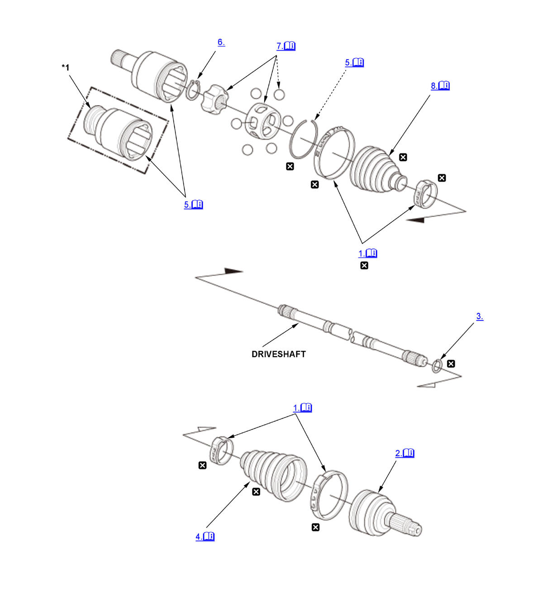

Front Driveshaft Disassembly and Reassembly (K20C1 (M/T)) (2017 2018 2019 2020 2021): Disassembly: Procedure
Numbered call-outs in figure pertain to list numbers in following procedure.

Courtesy of HONDA, U.S.A., INC. |
Detailed information, notes, and precautions |
 |
Replace |
| *1 | Right driveshaft |
- Boot Band - Remove
Ear clamp type
Low profile type
- Outboard Joint - Remove
1. Slide the outboard boot (A) partially toward the inboard joint side. 2. Wipe off the grease to expose the driveshaft and the outboard joint inner race.
3. Make a mark (A) on the driveshaft (B) at the same level as the outboard joint end (C). 4. Securely clamp the driveshaft in a bench vise with a shop towel wrapped around the driveshaft. 5. Remove the outboard joint (A) using the 26 x 1.5 mm threaded adapter and a commercially available 5/8"-18 UNF slide hammer (B).
NOTE: Check inside of the outboard joint and on the serrations for wear and tear.
6. Remove the driveshaft from the bench vise.
- Stop Ring - Remove
- Outboard Boot - Remove
NOTE:
- Check the outboard boot (A) for cracks and damage. If any damage is found, replace the boot.
- Wrap the splines on the driveshaft (B) with vinyl tape (C) to prevent damaging the outboard boot.
- Inboard Joint - Remove
1. Remove the circlip (A). 2. Make marks (B) on the bearing retainer (C) and the inboard joint (D) to identify the locations of the bearing retainer to the grooves in the inboard joint.
3. Remove the inboard joint on a clean shop towel (E). Be careful not to drop the steel balls when separating them from the inboard joint.
- Snap Ring - Remove
- Bearing Retainer and Bearing Race - Remove
1. Make marks (A) on the bearing retainer (B), the bearing race (C), and the driveshaft (D) to identify the position of the bearing retainer and the bearing race on the shaft. 2. Remove the bearing retainer, the bearing race, and the steel balls (E).
NOTE: If necessary, use a commercially available bearing puller.
- Inboard Boot - Remove
NOTE:
- Check the inboard boot (A) for cracks and damage. If any damage is found, replace the boot.
- Wrap the splines on the driveshaft (B) with vinyl tape (C) to prevent damaging the inboard boot.